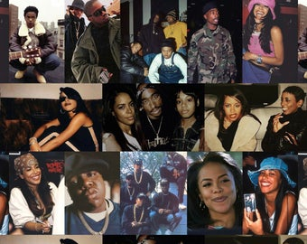

My first hobbie that I enjoy is music. I enjoy listening and singing to music alot. I love singing in my own time because it helps me stay calm and it also cures my boredom. My favorite genre of music is RnB hiphop. I've gotten used to listening to this type of music because my mother listens to it all the time. My father listens to tongan jams & reggae music all the time, but his taste isn't for me. I'm into rap music and those types of tunes. My favorite RnB singer is the one & only Queen Mary J Blige. I also enjoy listening to Tupac Shakur & The Notorious B.I.G (Bigger Smalls), King of New York. My favorite songs from the Queen is one of her albums. "My life". My favorite songs from Tupac are all his songs because they are relatable. (Not the violence) But my favorite song to relate to is "Mommas song." Another great reason why I love listening to R&B is that the music never gets old. It have the classics that everyone loves and sings with, but even the newer music is incredible and fun. They are good for any occasion, but RnB will forever be placed first in my playlist. The unique thing about RnB music is that the genre features a distinctive record production style, drum machine-backed rhythms, pitch corrected vocals, and a smooth, lush style of vocal arrangement. To me RnB is the best genre of music because contemporary R&B is often driven by keyboards, synthesizers, strong bass lines, and looped drum beats. In this sense, it has more in common with hip hop than rock music. Contemporary R&B songs regularly top charts, making R&B one of the most commercially successful genres in the modern music industry. RnB makes me feel stress free. RnB music has a calming effect. It can bring mental relief and healing to someone in distress.This Music has the ability to elicit emotion from its listeners: happiness, sadness, relaxation, frustration and aggression are feelings conjured up by music. R&B attracts a lot of outgoing, extraverted listeners. If you are a fan of R&B, like I am, you are someone who truly follows their heart! You have no problem showing your emotions. Especially emotions inspired by the music. RnB music is filled with love songs. R&B usually likes to focus on love and things of that sort. I think that's beautiful because unlike other music filled with nonsense, R&B actually talks about things that people can relate to. I'm sure anyone who had been in love has listened to love songs and related to them. This is the whole reason why I love and adore RnB music. It will forever be a vibe and my favorite jams of my life and enitre centurie.
My second hobbie is social media. Not a day goes past where I would never check my social media status. I have a social media addiction. My favorite media is Instagram and Tiktok. I enjoy watching tiktok videos & learning new dances with friends & family. With instagram, I enjoy texting friends & family. Reasons why I enjoy Instagram is because it has better content display: Instagram allows you to build your brand image through pictures and videos far more effectively than Facebook or Twitter or any other social media website. It is a completely clutter free User Interface and thus, as a social media marketer you enjoy better customer engagement. Instagram is a photo and video sharing social media app. It allows you to share a wide range of content such as photos, videos, Stories, and live videos. It has also recently launched IGTV for longer-form videos. I love dancing. I use tiktok for entertainment purposes only. This is a way to get viewed and seen on TikTok, not only as you practice and show off performing the same dances as other people, but also to put spins on it to continue to entertain users who are fans of the dance or who are tired of one version. Tiktok is where you can fun with other people such as friends and family. On tiktok any content is allowed. Tiktok is a big platform used around the whole world by everyone of any age. Tiktok makes me happy to be free of myself and the platform also makes me happy to see what others are grateful for and doing with their lives, wether its good news or sad. It makes me happy to see that they can express themselves to the world knowing they won't be judged at all by a single person. Tiktok is like my family from all over media.


Lastly i enjoy being happy with my family & friends. I love their vibe & humour and I also enjoy their company. They make me feel free to be myself. They make me feel safe, to know that nothing out in the world can hurt me. My family is everything and I wouldn't want it any other way else. My family is my biggest flex. I love and appreciate everything in my family. My family is the reason why I'm who I am today. Especially my parents. He made me proud of my background and how I was raised. Wether I was brought up in a big family with less money than other people, I was always and still am grateful. I love everything that comes with the word Family. Counting my siblings, I'm grateful for those aliens. I love who they make me become everyday and how they make me feel. At times there will be some moments where I'm disappointed at myself and will think why I'm placed into such a good family. I adore and love my family with my all. And to top that all off, They put God first. God is the center of my family, explaining why my family love each other the way they do. And to my friends, "I don't have friends, I have family." Any person I hang around with are not only my friend, but they are my family. I have one good friend, and count her as a member in my family. She's both my sister and best friend. I thank God for blessing me with such a friend to end up becoming someone important to me. I would do anything to please and keep my girl happy. Even when im low on money, I will always find a way to keep us both fed, If im ever in a bad mood, I will always put myself second and give her a reason to keep smiling and move on and if she is ever in trouble, I will always set myself out of my comfort zone to make sure shes fine. Everything I do for my family I do for her too as she is Family now.
FOE ALWAYZ !